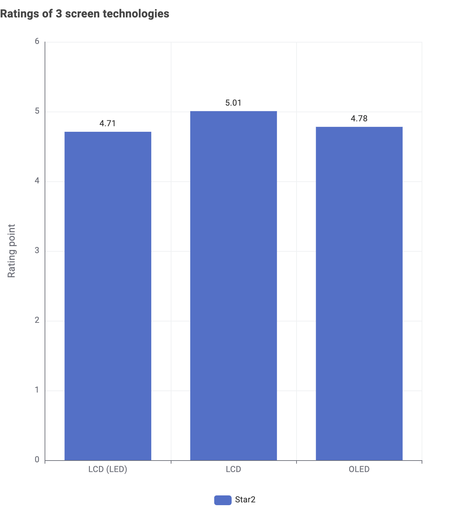
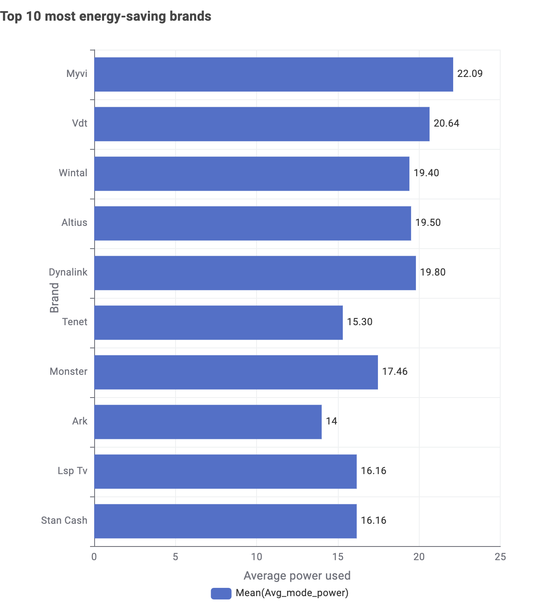

Televisions & Energy Efficiency
Data Insights: Choosing the Right Television
Which screen technology is the most recommended?
To conclude which screen technologies are most recommended, the average star rating was calculated for each technology. LCD turns out to be the most recommended screen technology with the highest average star rating (just a little above the 2 others).
Insight: Certain screen technologies achieve higher average star ratings, making them the most recommended options based on overall rating.
Which TV brand is the most energy-efficient?
Energy efficiency is assessed using average power consumption. Brands with lower average power usage are considered more energy-efficient, which are Ark, Tenet and Lsp TV or Stan Cash. However, those brands are not very popular in the market, as they have a low number of models available.
Insight: Some TV brands consume less power on average, indicating better energy efficiency compared to others.